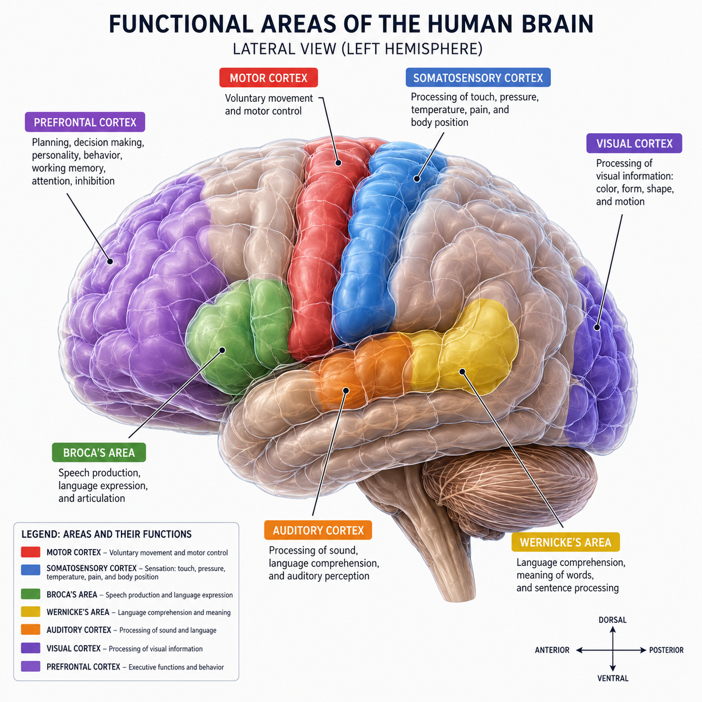
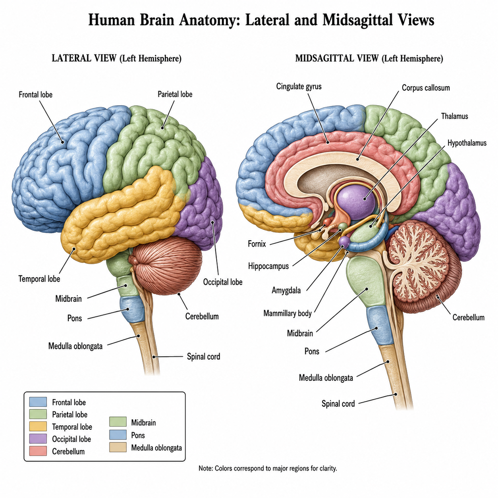

The Cerebrum & Its Four Lobes
Click a Lobe of the Cerebrum
Corpus Callosum
A deep bridge of white matter connecting the left & right hemispheres so they can communicate.
Gyri & Sulci
Gyri are the raised ridges (convolutions); sulci are the shallow grooves. The central sulcus divides frontal & parietal.
Fissures
Deep grooves: the longitudinal fissure separates the hemispheres; the transverse fissure separates cerebrum from cerebellum.
Gray vs White
The outer cortex is gray matter (neuron cell bodies); the inner bulk is white matter (myelinated axons).
Functional Areas of the Cerebral Cortex
Sensory, Motor & Association Areas — Click to Explore
Reference — Functional Areas of the Cortex

Sensory areas (somatosensory, visual, auditory, gustatory) receive input; motor areas (primary motor, Broca's) send commands; association areas interpret and connect everything.
Deep Brain — Diencephalon, Limbic System & Basal Nuclei
The Core of the Brain — Click a Structure
Reference — Midsagittal View of the Brain

A midsagittal cut reveals the deep structures: the thalamus and hypothalamus sit at the core (diencephalon), just below the corpus callosum.
Brain Stem & Cerebellum
Automatic Control & Coordination — Click a Structure
Reference — Brain Stem & Cerebellum (Midsagittal)
The brain stem (midbrain → pons → medulla) blends into the spinal cord; the cerebellum sits behind it, below the occipital lobe (separated by the transverse fissure).